About the lens meter
A lensmeter is a device that measures the refractive power of eyeglasses lens.
I will briefly explain the mechanism. I will skip the difficult topics.
Regarding lenses, I think that magnification and focal length are not so uncomfortable for the general public.
-
Magnification
Magnification is a numerical representation of how near an object can be brought through a lens. If you can pull the target 100m ahead to 50m ahead, the angle of view will be doubled. Of course, just because it's through the lens doesn't mean that the object exists 50 meters ahead. It feels as if it exists 50m ahead.
Magnification also has vertical, horizontal, and angular magnification, but the magnification I just explained is called angular magnification.
It is this angular magnification that is described as "optical 24x" on cameras. -
Focal length
The focal length is determined by changing the distance to the paper by holding the lens over a piece of paper painted black and receiving sunlight. It is the distance from the paper to the lens when smoke begins to rise from the paper (focus position, focal point).
You used to do it when you were a kid.
When dealing with the refractive power of eyeglasses lens, the focal length has a lot to do with it. Just as there are some different types of magnification, there are some different types of focal lengths.
-
About the focal length based on the "principal point"
This is common. But what is a "principal point" is a bit diffcult to explain. Depending on the shape of the lens, you may be able to visually confirm that this is the principal point. Normally, it is often inside or outside the lens and cannot be visualized.
If there is an opportunity, I would like to explain it, but this time I would like to omit it. -
About the focal length measured directly from the rear surface of the lens
This is called the back focal length (BFL), and the focal length in cameras also refers to the distance from the rearmost surface of the lens system to the film (now, usually an image sensor). The unit of BFL is generally mm. Unlike the principal point, it has the advantage of being able to visualize the distance visually.
The refractive power of a eyeglasses lens is defined as [1/BFL]. It is characterized by the unit of BFL being m.
-
For example, if the BFL is 1m (1000mm), the refractive power is 1Diopter (usually abbreviated as "D"). 0.5m (500mm) is 2D.
Refractive power is also expressed as power.
"The power of this lens is 2D." etc.
If the BFL can be measured, the refractive power is obtained. Then, do you actually measure the distance from the back side of the lens to the focal point with a tape measure or the like while exposing the eyeglass lens to sunlight?
-
It's difficult, but if it's a 1D or 2D lens, it seems possible to measure it. A 1D or 2D lenses are convex lens. When we think of lenses, we tend to think of convex lenses. There is also a lens with a concave shape.
Again a rough explanation...
In eyeglasses, convex lenses are used to correct Hyperopia. On the other hand, Concave lenses are used to correct myopia. Both are equally popular lenses for eyeglasses.
Concave lenses cannot focus even when exposed to sunlight. However, a concave lens also has a focus and a BFL exists.
This is the first time I use a diagram. Fig. 1 shows the relationship between the focus and BFL of convex and concave lenses.
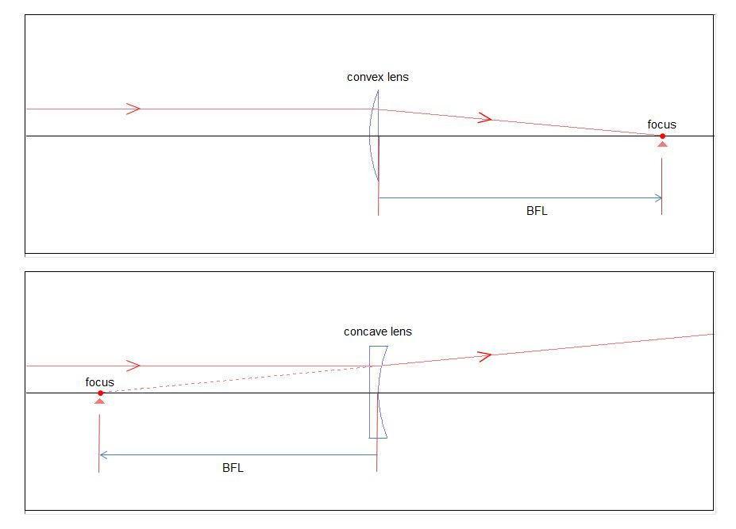
Fig. 1
Parallel rays are refracted by a convex lens and focus. The BFL is the distance from the back of the lens to the focal point.
In the case of a concave lens, parallel rays diverge after being refracted by the lens. However, if we trace the widen rays backwards, we will find that they meet at one point. This is the focal point for concave lenses.
If the distance from the back of the concave lens to the focal point is 1m, it will be 1D, just like the convex lens. However, since it is not possible to distinguish between convex and concave lenses with this method, we modify it as follows. The BFL of a convex lens is added a [+] sign. The BFL of a concave lens is added a [-] sign.
1D and 2D of a convex lens are described as +1D and +2D hereafter. Concave lenses are described as -1D, -2D, etc.
Now, BFL can be measured with a tape measure for a convex lens, but not for a concave lens. But unlike the focal length relative to the principal point, it doesn't need to be calculated.
There is one more important thing about eyeglasses lense.
-
Glasses should use lenses that correct the right and left eye for each person who needs them. In other words, it is custom-made. When making eyeglasses, it is essential to check whether the power of the lenses to be used is accurate. Of cource, even when making eyeglasses for myopic people, it is necessary to check the power of the lenses. A lens meter is a tool that provides a way to measure it.
-
As before, a rough explanation...
The figures from here on use the figure of the lens meter simulation tool (abbreviated as SRTLM). The width of the ray bundle is narrow and difficult to see, but for various reasons it is not possible to widen the width any further. I would like you to be patient with this.
In Figure 2-1, a lens with a power of 0D is set in the lens meter. The light beam emitted from the target (so-called light source) is acted by the first half of the collimator (the device that makes the light beam parallel: the two lenses on the front left in the figure) and becomes parallel light beams. In the second half of the collimator system (the lens with a power of 0D ), the rays are not refracted and enter the objective lenses as parallel rays. Then, it is refracted by the two lenses (objective lens system) on the right back and focused on the focusing glass. The position of the target at this time is defined as the target reference position.
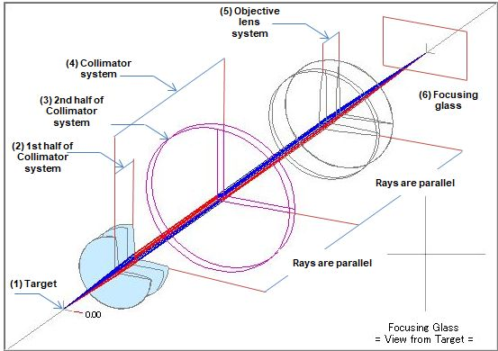
Fig. 2-1
(1) Target A pinhole in front of the light source (a filter to pass the rays needed for measurement). (2) 1st half of collimator system Parallel the rays emitted from the target reference position (0.00). (3) 2nd half of collimator system Test lens. (4) Collimator system Parallel the rays the rays emitted from the target (composed of the first half of the collimator system and the test lens). (5) Objective lens system When parallel rays are incident, focus it on the focusing glass. (6) Focusing glass Place where the image of the test lens is projected (may or may not be in focus). Figure 2-2 shows a +5D lens set on the lens meter. The target is at the reference position. Rays emitted from the target are refracted in the first half of the collimator system and become parallel rays. The light beam is more refracted by the +5D lens and narrowed. The narrowed light beam is further refracted by the objective lens system and focused(A) in front of the focusing glass. On the focusing glass, it turns into a widen light beam again, resulting in a blurred image. The front view of the focusing glass in the figure shows that the image has an area, not a point.
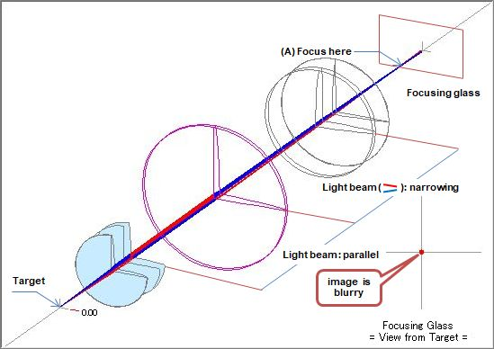
Fig. 2-2 Target reference position. +5D lens set.
In order to set the +5D lens and focus with the focus glass, it is necessary to move the target. Considering that when the lens was not set, the collimated rays reached the objective lens system, moving the target slightly to the right will result in collimated rays after passing through the +5D lens. See Figure 2-3.
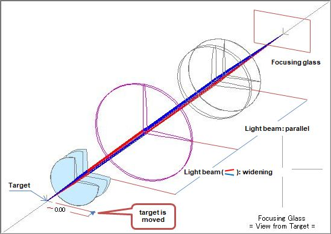
Fig. 2-3 +5D lens is set and in focus
After passing through the test lens (which is the +5D lens) the rays become parallel. Let's trace the rays going towards the +5D lens backwards. The rays should meet at one point. The width of the rays is different, but can you see that if you flip Figure 1 left and right, it will be exactly the same? The lens meter is also looking for BFL. BFL doesn't come out on the surface, but the position of the target when BFL is sought becomes important. The position of the target at this time will be called the +5D position in this explanation.
Figure 2-4 is an image when a -5D lens is set on the lens meter. Rays emitted from the target are refracted in the first half of the collimator and become parallel rays. However, the -5D lens refracts it further and turns it into a divergent ray (focusing somewhere in the front left). Even if the objective lens system refracts the light, it will be in focus behind the focusing glass. The image will be out of focus on the focusing glass, , resulting in a blurred image. The front view of the focusing glass in the figure shows that the image has an area, not a point.
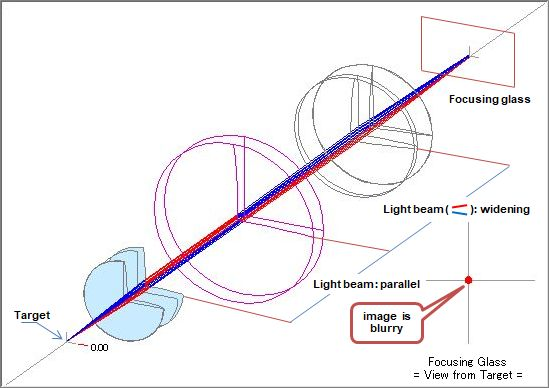
Fig. 2-4 Target reference position. -5D lens set.
In order to set the -5D lens and focus with the focus glass, it is necessary to move the target. Considering that when the lens was not set, the collimated rays reached the objective lens system, moving the target slightly to the left will result in collimated rays after passing through the -5D lens. See Figure 2-5.
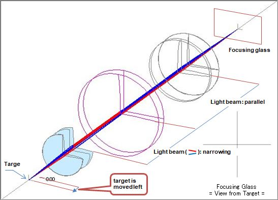
Fig. 2-5 2-3 -5D lens is set and in focus
Even if a concave lens is used as the test lens, the rays refracted by the lens become parallel. So if you follow the rays heading towards the -5D lens, they should meet at one point. The width of the rays is different, but can you see that if you flip Figure 1 left and right, it will be exactly the same? Even with a concave lens, the lens meter is looking for BFL. As with the convex lens, the position of the target at this time will be called the -5D position in this explanation.
-
From the above, we have learned that the lens meter can determine the BFL of a lens by moving the target, and that the amount of movement seems to correspond to the refractive power of the lens.
-
When a 0D lens is set (same as when no lens is set)
The target position: Target reference position
Light rays directed to the test lens: parallelBFL is ∞
The refractive power conversion at target position is 0.00D -
When a +5D lens is set
The target position: Move to the right by +5D (converted to refractive power) from the reference position
Rays towards the lens: focus 200mm in front of the lensBFL is +200mm The refractive power conversion at the target position is +5.00D
-
When a -5D lens is set
The target position: Move to the left by -5D (converted to refractive power) from the reference position
Rays towards the lens: focus 200mm behind the lensBFL is -200mm The refractive power conversion at the target position is -5.00D
-
I explaned the lens meter roughly.
-
The actual lens meter does not display the image formation state explained here. Fig. 3 left shows the appearance of the lens meter.
-
A lens for measurement is set in the lens holder. The focus glass can be seen through the eyepiece. By turning the measurement dial, the target moves. The image and refracting power of the lens (target movement amount converted to refracting power) when the measurement lens is in focus are projected onto the focusing glass. The right side of Fig. 3 shows the image (in this case, the spherical lens in focus) of the focusing glass and the measurement lens drawn by SRTLM .
Light green dots are drawn on the focusing glass at a circumference of a fixed distance from the center. This is the image of the measurement lens, called the corona image (this figure is for a spherical lens).
*In SRTLM, the refractive power of the measurement lens is displayed at the "target position", so the recractive power is not displayed on the focusing glass.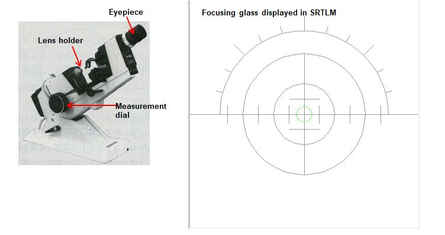
Fig. 3 Actual lens meter
If you are interested, try SRTM! Before that, I will explain roughly about the characteristics of the eyeglasses lens.
Unlike lenses used in cameras, eyeglass lenses have a unique structure that corrects the refractive error of the eye with a single lens.
-
The relationship between refractive error of the eye and corrective lenses is shown below.
Table 1 No. Refractive error Composition of the lens to be corrected Notation example of the lens to be corrected Supplement (1) Myopia Spherical lens S-3.00 The corona image is focused in one place (1-a) Myopia + Astigmatism Spherical lens and Cylindrical lens S-1.50 C-1.25 Ax180 The corona image is focused in two places (2) Hyperopia Spherical lens S+1.25 The corona image is focused in one place (2-a) Hyperopia + Astigmatism Spherical lens and Cylindrical lens S+2.00 C-1.00 Ax90 The corona image is focused in two places (3) Mixed astigmatism Spherical lens and Cylindrical lens S+1.50 C-2.00 Ax15 The corona image is focused in two places This is where the new words of astigmatism and cylindrical lenses came into being. "Ax" also appeared for the first time.
The myopia and the hyperopia can be corrected with a spherical lens as shown in Fig. 3. On the other hand, astigmatism (*) is corrected with a cylindrical lens or a spherical lens and a cylindrical lens.Astigmatic eyes include regular astigmatism that can be corrected with eyeglass lenses and irregular astigmatism that is difficult to correct. Only normal astigmatism is covered here.
Fig. 4 shows the imaging state of the (+) cylindrical lens and the (-) cylindrical lens.
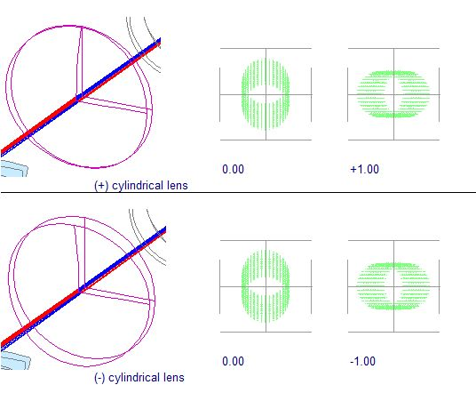
Fig. 4
Strangely enough, two points are in focus, and the image of the corona extends like a line instead of dots. It should be noted that the directions of the lines when each is in focus are orthogonal. The refracting power in the 0° direction is 0D in both the upper and lower figures in Fig. 4, just because it is a cylinder. (If you change the orientation of the lens in the upper figure and stack it on the lens in the lower figure, it will have the same shape as the 0 D lens in Figure 2-1). You see?
The 0° direction coincides with the axis of the cylindrical lens. When a rays passes through a cylindrical lens, it is refracted in the 90° direction, but not in the 0° direction. In the upper part of Fig. 4, the linear direction of the corona image when it is in focus at +1.00 (-1.00 in the lower part of Fig. 4) coincides with the axial direction of the cylindrical lens. Therefore, from now on, when the corona image extends linearly, we will refer to the direction as the axial direction. "Ax" used in the notation of the lens represents the axial direction of the cylindrical lens.In Figure 4 (both upper and lower figures), when the corona image is in focus at 0.00, it will be in a blurred state extending linearly by 1.00D in the 90° direction. When the image is in focus at +1.00 in the upper part of Fig. 4 (-1.00 in the lower part), it will be blurred by 1.00D in the 180° direction. This is the reason why the corona image is linear.
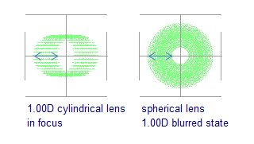
Fig. 5
The left image in Fig. 5 is when the 1.00D cylindrical lens is in focus, and the right image is when the spherical lens is out of focus by 1.00D. Cylindrical lenses blur in only one direction, while spherical lenses blur in all directions. But the amount of blur is the same for both.
Astigmatism, one of the refractive errors of the eye, is corrected with a cylindrical lens.
Supplement
If you think about the shape of a cylindrical lens, you'll notice that it has max power in one direction and zero power in the orthogonal direction. If one direction is 0°, the orthogonal direction is 90°.
One direction 0° equals 180° (similarly one direction 90° equals 270°). I won't go into detail here, but the refractive power of a cylindrical lens is 180°cycles.
When the axial direction of eyeglass lenses is 0°, it is customary to express it as 180°. From now on, I will write 180° when the axis direction is 0°. -
In Table 1, there are "myopia + astigmatism" and "hyperopia + astigmatism" in the refractive error of the eye. In order to correct these refractive errors, it is necessary to superimpose two lenses, a spherical lens that corrects myopia and hyperopia, and a cylindrical lens that corrects astigmatism. How does a eyeglass lens combine all this into a single lens?
-
Let's tweak the shape of the cylindrical lens a little. Look carefully at the cross-sectional shape of the lens in Fig. 6. You can see that the front surface of the lens is curved compared to Fig. 4. The back follows the curve of the front. The back side of Fig. 4 has a cylindrical shape, but the back side of Fig. 6 has a strong curve in one direction and a weak curve in the direction perpendicular to it.
Such a shape is called a toric. It means 'barrel-shaped' or 'toroidal'.
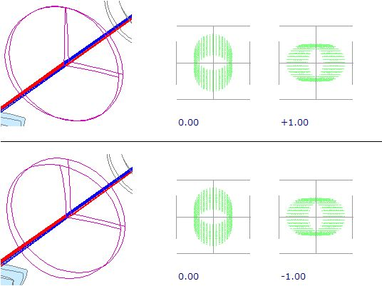
Fig. 6
In Fig. 6, the refracting power is 0.00 when one of the two points is in focus, but if Table 1 is rewritten as follows, I hope you can see that all of this can be corrected with a single lens.
-
The lenses in Table 1 are shown below.
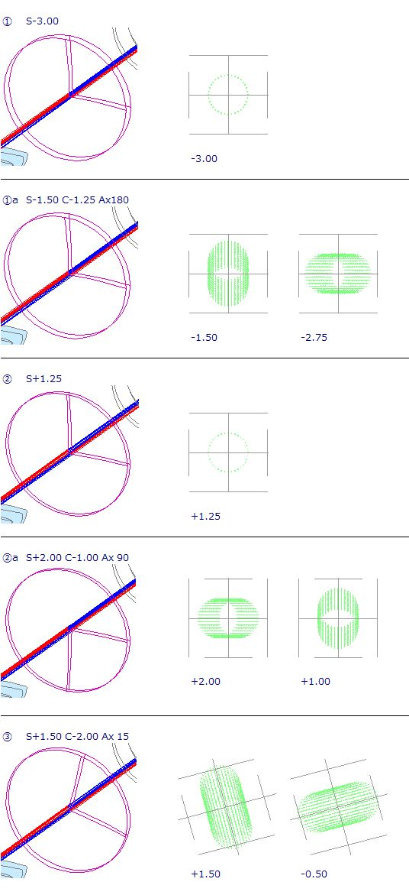
Fig. 7
-
-
Finally, I will explain that there are three ways to notate the power of eyeglass lenses. You may wonder why there are three ways, but it seems that there were various circumstances.
Table 2 No. Notation Exsample (1) C C C-1.75 Ax90 C-3.75 Ax180 (2) S C(-) S-1.75 C-2.00 Ax180 (3) S C(+) S-3.75 C+2.00 Ax90 -
(1) to (3) are the same value.
-
For (2) and (3), if the spherical lens indicated by S and the cylindrical lens indicated by C are superimposed, the refractive power will be the same as when the two cylindrical lenses in (1) are superimposed.
-
Each notation can be done with a simple calculation.
Table 3 shows conversion examples.
-
The [C C] notation of (1) can be measured directly with a lens meter.
Table 3 (1)→(3) S refractive power on the positive side -1.75 C Subtract plus side refractive power from minus side refractive power -2.00 -3.75 - (-1.75) Ax minus side 180 (1)→(3) S refractive power on the negative side -3.75 C Subtract minus side refractive power from plus side refractive power +2.00 -1.75 - (-3.75) Ax plus side 90 (2)→(3)
(3)→(2)S sum of plus side refractive power and minus side refractive power -3.75 -1.75 + (-2.00) C Change the sign of C refractive power in (1) -2.00 +2.00 Ax Add 90 to "Ax" in (1)
(subtract 180° if it exceeds 180°)180 360->180 -